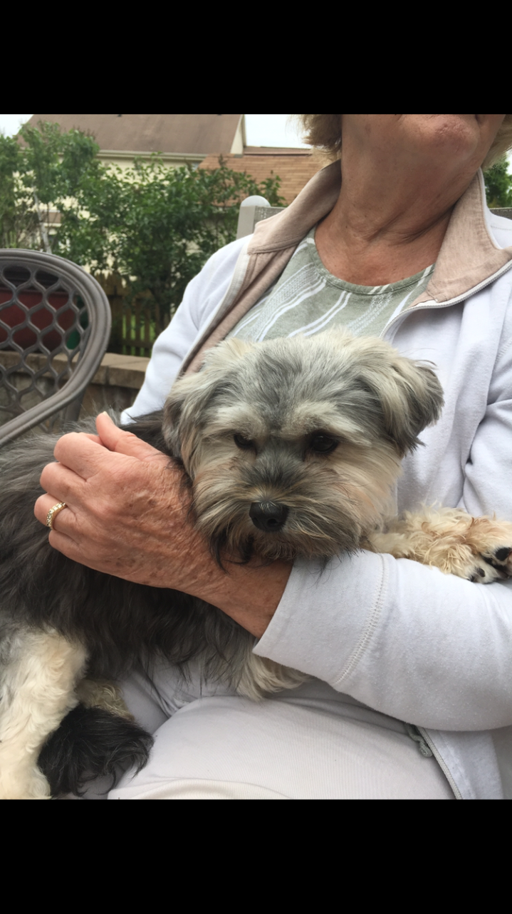

Hi, my name is Sadie Sahlberg, and I have created this website to foster learning in our youth. This website has been created in parallel with 5 take-one leave-one library boxes that can be found at the following locations:
Please feel free to visit these boxes and leave a copy of your favorite book for others to enjoy. I have created this website and these library boxes for my Girl Scout Gold Award project, so in honor of that, here is a little about my journey. When I was in 5th grade, I completed my first of three steps to achieve the gold award I am earning today. My and my troop spent our summer collecting over 500 books for a school in Virginia that had no access to a library. We set up collection points around our town and after a few weeks, we had enough to start a library for those in need. This earned me my bronze award, the greatest honor I could be presented with at such a young age. In 8th grade, I completed my next step, my silver award. I knew my interests lay in helping those in need, and our troop decided to build bird and butterfly houses at a Wounded Warriors retreat in our area. We wrote our own bird and butterfly watching books, as that was a common hobby among the occupants of this particular WW retreat, and planted butterfly bushed to attract these wonderful creatures. Now, as a 12th grader, I am working alongside friends and family to build 5 take-one leave-one library boxes in our area and create a website that will allow people of all ages to share and connect through a common love of books. This site will not only serve to connect people in this way, but allow people in need all over the world access to literature and education. I hope for this self sustainable site to help children and adults alike to come together to share their favorite stories. Together, I hope to inspire others to help those in need and inspire a sense of community through anything they are passionate about. Together, we can make a difference. While I have worked so hard to be where I am today, I couldn’t have done any of it without my friends and family, who have stood with me every step of the way. I now dedicate the area below to those who have helped me get here:
